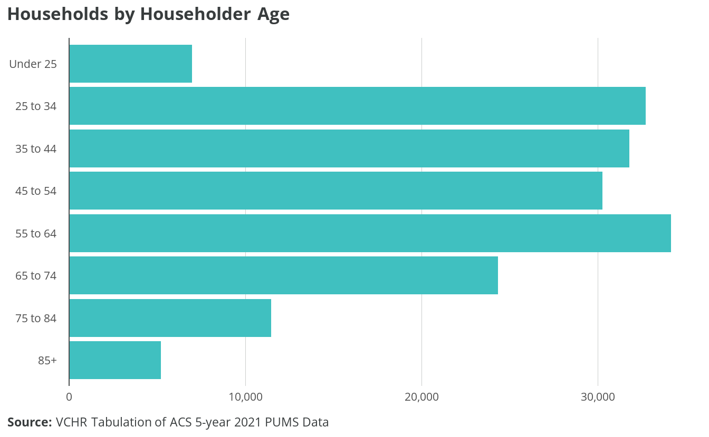
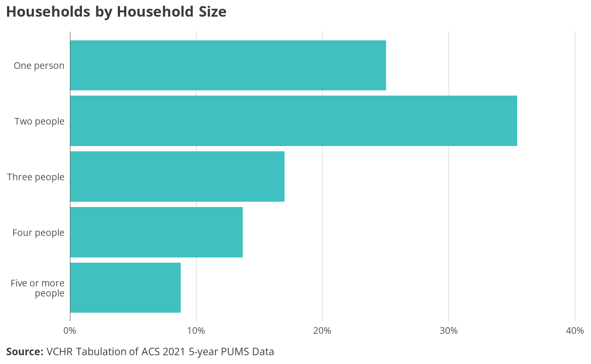
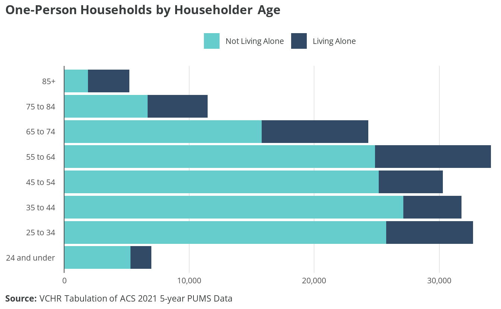
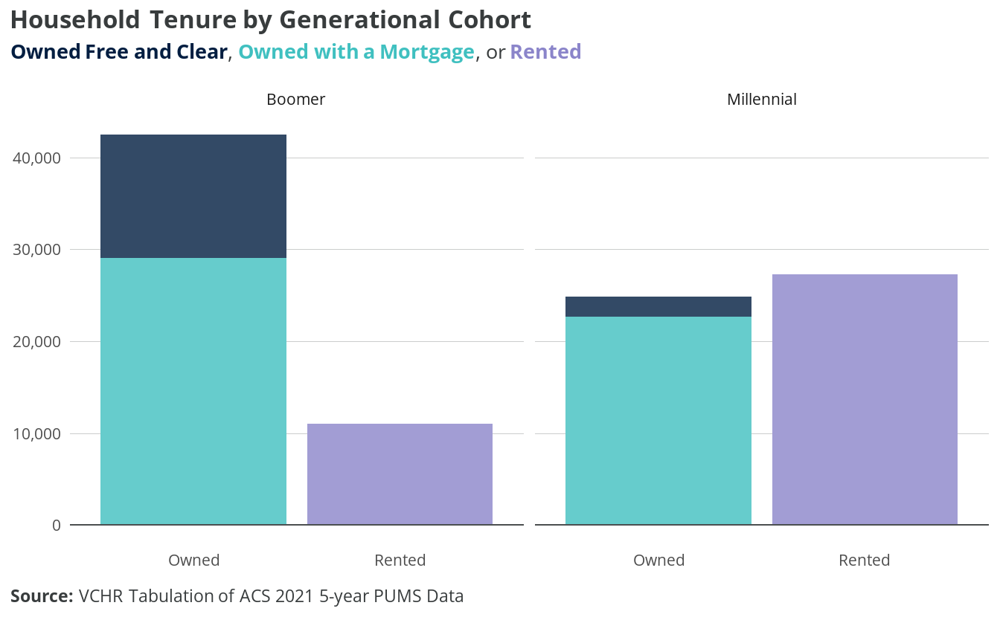
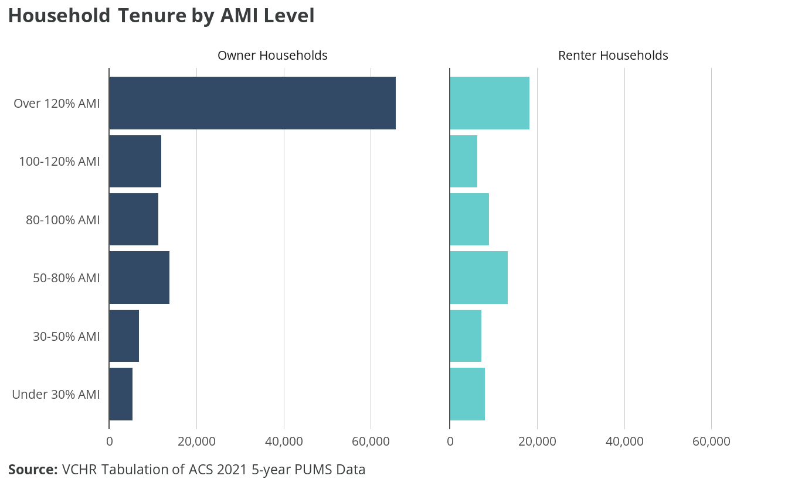
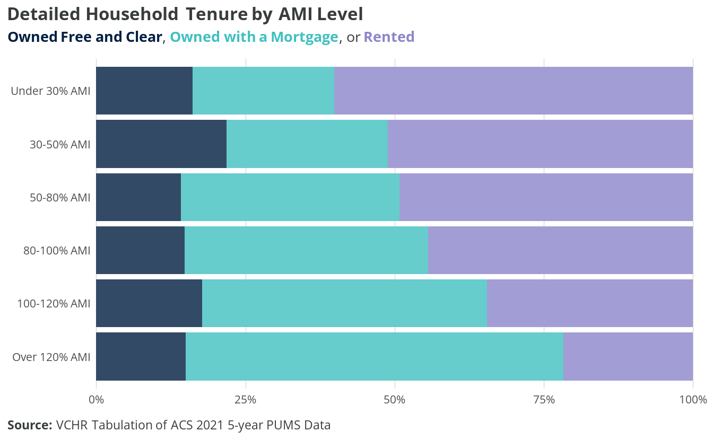

3 Household trends
The City of Virginia Beach has a population of approximately 448,573 residents, living in 177,029 households. A majority of Virginia Beach households are family households, containing two or more people related by birth, marriage, or adoption. The most numerous type of family household is married couples without children, of which there are 50,460. The second most numerous is married couples with children, of which there are 38,536. The city also has a large population of older adults, with nearly one-quarter of households led by seniors 65 and older.
Dwelling unit sizes are generally mismatched with household size: 60% of Virginia Beach households consist of one or two people, yet three-quarters of dwelling units have three or more bedrooms. Senior householders are more likely to live alone than other age cohorts. Focus groups participants expressed concern about the isolation and poor living conditions endured by seniors living alone. Many suggested that the City increase outreach and services for this population, including case management, home modifications and in-home aid services where desired, and affordable options for assisted living. Focus group participants expressed the importance of seniors having a choice when either relocating to assisted living or aging in place.
A majority of Virginia Beach households own their homes, although the frequency of each form of tenure varies by householder race, householder age, and household income. A majority of Virginia Beach householders identify as white, non-Hispanic. Householders who identify as Black or Hispanic are more likely to rent than householders identifying as white or Asian.
Racial disparities in housing
In the United States, the homeownership rate of white households is 20%-30% higher than that of Black households, and the disparity increased from the 1970s to the 2010s.1 Researchers investigating the causes of racial/ethnic disparities in homeownership have noted inter-group differences in important predictors of homeownership.2 However, the disparity between white and Black households remains statistically significant when controlling for economic indicators, and the size of the disparity increases as household affluence decreases.3
The extent and direction of kin-network wealth transfers likely contributes to this disparity. For moderate-wealth households, financial transfers from parents or extended family members are instrumental to meeting down-payment and closing costs.4 In addition, access to kin-network wealth helps households deal with the costs of emergency repairs and other shocks, making homeownership more secure, and it may influence a household’s decision to apply for mortgage financing.5 Moderate-income Black households are less likely to receive financial assistance from parents or relatives and more likely to provide such support to parents or relatives in need.6
Institutional credit access has also been shown to vary by race. Controlling for indicators of creditworthiness, Black households are more likely than white households to be rejected for a mortgage loan and less likely to apply.7 The 2007-2008 foreclosure crisis caused disproportionate loss of homeownership among Black households, as the transition from redlining to “greenlining” in majority-Black urban areas meant Black homeowners disproportionately held subprime mortgage loans.8
Quantitative analysis cannot evaluate racial discrimination as a causal factor in disparate homeownership rates. However, due to the high share of the Black-white disparity that cannot be explained by confounding variables, as well as experimental and audit evidence that discrimination based on race remains pervasive in housing and credit markets9, racial discrimination is likely a causal factor. Furthermore, even when homeownership disparities can be largely explained by group differences in the social, economic, and contextual determinants of homeownership, it’s important to note that these group differences themselves reflect structural disadvantages shaped and perpetuated by discrimination.10
3.1 Demographics
The median Virginia Beach householder age is 50 years old, and half of householders are aged between 36 and 63 years. Approximately 41,038 householders, or 23%, are seniors 65 or older. Only 6,976 householders, or 4%, are younger than 25.
Approximately 53,429 householders are baby boomers, aged between 57 and 75 in 2021; 52,131 are millennials, aged between 25 and 40 in 2021; and 6,976 are Gen Z or Zoomers, of whom the oldest are 24 years old.
Housing preferences by age
Households of retired persons or those close to retirement prioritize proximity to friends and family as well as conveniences when choosing a home location. Homebuyers 60 and older prefer suburban, small-town, and resort living over urban or rural places.11 Convenience to family/friends, health facilities, and shopping — as well as overall affordability — were the highest-ranking factors for buyers 68 and older.12
Priorities for younger renters and buyers include proximity to work, affordability, and commuting costs. Although walkability is still important, younger generations’ preferences have shifted toward suburban contexts. Quality of and convenience to schools are also very important to younger buyers.13
Regardless of age, recent buyers are looking for turnkey homes that do not require major renovations.14 Renters are looking for spacious floor plans, a washer/dryer, walk-in closets, balconies, and hardwood floors. The median home size for all buyers was 1,800 square feet, with buyers younger than 23 buying smaller homes (1,500 square feet).15
Both renters and owners are gravitating toward single-family homes, and preferences are shifting toward larger homes that are further apart. In doing so, they accept longer commutes to schools and amenities. Internet access is considered very important for renters and owners alike.
Over 65% of Virginia Beach householders identify as white, 18% as Black, and 7% as Asian. Seven percent of householders identify as Hispanic of any race.
3.2 Composition and living arrangement
The median household size in Virginia Beach is two people. One-person households make up 25% of households in Virginia Beach, and two-person households make up 35%. Seventeen percent of households are three-person, 13% are four-person, and 9% of households are five or more persons.

While 60% of Virginia Beach households are one- or two-person, over three-quarters of dwellings have three or more bedrooms: 39% have three bedrooms, 24% have four bedrooms, and 6% have five or more bedrooms. Twenty-two percent of dwellings have two bedrooms that can accommodate a three-person family. Only 7% of housing units are efficiency/studio style or one-bedroom units. Adding smaller, multifamily units could increase the number of affordable, high-quality units without subsidy in the market. These units would have more appropriate square footage and number of bedrooms, and land costs would be distributed among a large number of units.
Smaller households are particularly common among senior households, the age group most likely to live alone. Approximately 35% of householders aged 65 to 74, and 42% of householders aged 75 to 84, live alone. Nearly two-thirds of householders aged 85 or older live alone. Single-person households who are dependent on fixed Social Security and/or retirement income can be vulnerable to rising rents or owner costs such as taxes, utilities, and insurance.

Focus group participants expressed concern about the isolation and poor living conditions endured by seniors living alone. Many suggested that the City increase outreach and services for this population, including case management, home modifications and in-home aid services where desired, and affordable options for assisted living. Focus group participants expressed the importance of seniors having a choice when either relocating to assisted living or aging in place.
There are approximately 120,016 family households16 in Virginia Beach, accounting for 70% of all households. The most common family household configuration is married couples without children, of which there are 50,460. There are approximately 57,511 households with children: 38,536 are married couples with children, 13,850 are led by single mothers, 4,383 by single fathers, and approximately 742 with another living arrangement. There are 12,787 other family households with unmarried householders: around two-thirds are led by women and one-third by men. There are 7,212 multigenerational households, meaning at least three generations, making up 6% of family households of any configuration. Some focus group participants highlighted multigenerational households seeking larger homes as a new trend in city homebuying.
There are approximately 50,710 nonfamily households, and the most common form is one person living alone. Approximately 26,050 women and 18,289 live alone in one-person households. Approximately 6,374 households are made up of unrelated roommates, which accounts for 4% of all Virginia Beach households.
3.3 Tenure
Approximately 114,900 households in Virginia Beach are homeowners: 65% of all households. Around three-quarters of owned homes are owned with a mortgage or loan, while one-quarter are owned free and clear. Approximately 60,510 households are renters: 34% of all households.

Household tenure varies considerably by generational cohort. Nearly 80% of baby boomer–headed households own their homes. Only 1 in 5 boomers rent, compared to over half of millennials and over 90% of Gen Z households. Furthermore, among homeowner households, nearly one-third of boomers own their home without a mortgage or loan payments, compared to under one-tenth of millennial households.
Millennials face a tougher homeownership landscape than both preceding and succeeding generations.1718 They have lower homeownership rates than baby boomers at the same age. The disparity is attributed to economic challenges stemming from entering the workforce during the 2001 recession and the subsequent 2008 financial crisis. These factors curtailed earnings, wealth accumulation, and the ability to purchase homes for an extended period.19
On the other hand, Gen Z has a higher homeownership rate compared to other generations at the same age.20 Gen Z’s success in homeownership is attributed to various factors. Many capitalized on historically low mortgage rates during the pandemic, notably in 2020 and 2021. Additionally, a robust job market and substantial wage growth played a pivotal role. Despite graduating from college around the pandemic’s onset, Gen Z experienced advantageous financial circumstances including federal financial support and near record-low unemployment rates. Remote work also enabled them to explore more affordable housing markets.
While multiple factors influence homeownership among different cohorts, economic factors — particularly low mortgage rates and high employment rates — stand out. After all, the access to homeownership of two generations — millennials and Gen Z, who are most active in the labor market — will likely be impacted by economic conditions and housing supply.

Tenure also varies based on income. HUD definitions of income (Table 3.1) are applied in this analysis because they constitute the basis for many of the programs addressing disparities in access to homeownership and other housing challenges.
Although 2021 limits are used in the data analysis to align with the data’s vintage, VCHR has provided the most-recent income limits, which better reflect current incomes in Virginia Beach.

Households with higher incomes relative to AMI are more likely to own their homes. Nearly 60% of homeowners have household incomes above 120% of AMI, while over 60% of renters have household incomes below 100% of AMI. Nearly 80% of households above 120% AMI are owners, while only 22% are renters. Among extremely low-income households — those at 30% AMI or less — 60% are renters and 40% are owners.

Households at lower AMI levels are less likely to own their homes, but, as shown in Figure 3.10, lower-income households who do own their homes are more likely to own free and clear. For example, among households below 30% AMI, 40% are homeowners but nearly 60% of homeowners own free and clear. In contrast, among households above 120% AMI, nearly 80% are homeowners, but under 20% of homeowners own free and clear. Given the high cost of homeownership with a mortgage, homeowner households at lower AMI levels are likely to be older households living in a home they have already paid off.
Finally, household tenure and form of ownership vary by householder race and ethnicity. White and Asian households are twice as likely to own than to rent. A narrow majority of Hispanic households own their homes, while 55% of Black households rent. Among homeowners, a higher share of white and Asian households (over one-quarter) own their homes free and clear, compared to 1 in 5 Hispanic and 1 in 7 Black homeowner households.
Tenure plays a crucial role in housing affordability, with renters more vulnerable to increasing housing costs than homeowners, and a higher rate of housing cost burden among renters than among owners. By definition, cost-burdened households spend more than 30% of their income on housing costs, which can make it difficult to afford other necessities like food, healthcare, and transportation.
While homeowners generally have fixed mortgage payments that change little from year to year, renters often face increased housing costs annually. In competitive markets, they may also be subject to turnover in unit ownership, which is often associated with higher rent increases. Housing affordability is discussed in more depth in Chapter 5.
Goodman, L. S., & Mayer, C. (2018). Homeownership and the American dream. Journal of Economic Perspectives, 32(1), 31-58.↩︎
See Alba, R. D., & Logan, J. R. (1992). Assimilation and stratification in the homeownership patterns of racial and ethnic groups. International migration review, 26(4), 1314-1341.
Wachter, S. M., & Megbolugbe, I. F. (1992). Impacts of housing and mortgage market discrimination racial and ethnic disparities in homeownership. Housing Policy Debate, 3(2), 332-370.
Hall, M., & Crowder, K. (2011). Extended-family resources and racial inequality in the transition to homeownership. Social Science Research, 40(6), 1534-1546.
Hilber, C. A., & Liu, Y. (2008). Explaining the black–white homeownership gap: the role of own wealth, parental externalities and locational preferences. Journal of Housing Economics, 17(2), 152-174.↩︎
Gyourko, J., Linneman, P., & Wachter, S. (1999). Analyzing the relationships among race, wealth, and home ownership in America. Journal of Housing Economics, 8(2), 63-89.↩︎
Engelhardt, G. V., & Mayer, C. J. (1998). Intergenerational transfers, borrowing constraints, and saving behavior: Evidence from the housing market. Journal of Urban Economics, 44(1), 135-157.↩︎
Hall, M., & Crowder, K. (2011). Extended-family resources and racial inequality in the transition to homeownership. Social Science Research, 40(6), 1534-1546.↩︎
Chiteji, N. S., & Hamilton, D. (2002). Family connections and the black-white wealth gap among middle-class families. The Review of Black Political Economy, 30(1), 9-28.↩︎
Charles, K. K., & Hurst, E. (2002). The transition to home ownership and the black-white wealth gap. Review of Economics and Statistics, 84(2), 281-297.↩︎
Faber, J. W. (2018). Segregation and the geography of creditworthiness: Racial inequality in a recovered mortgage market. Housing Policy Debate, 28(2), 215-247.↩︎
Pager, D., & Shepherd, H. (2008). The sociology of discrimination: Racial discrimination in employment, housing, credit, and consumer markets. Annual Review of Sociology, 34, 181-209.↩︎
Kuebler, M., & Rugh, J. S. (2013). New evidence on racial and ethnic disparities in homeownership in the United States from 2001 to 2010. Social Science Research, 42(5), 1357-1374.↩︎
National Association of REALTORS® Research Group. (2023). 2023 Home Buyers and Sellers Generational Trends Report. Retrieved October 27, 2023, from https://www.nar.realtor/sites/default/files/documents/2023-home-buyers-and-sellers-generational-trends-report-03-28-2023.pdf↩︎
Ibid.↩︎
National Association of REALTORS® Research Group. (2021). 2021 Home Buyers and Sellers Generational Trends Report. Retrieved October 11, 2022, from https://www.nar.realtor/sites/default/files/documents/2021-home-buyers-and-sellers-generational-trends-03-16-2021.pdf↩︎
National Association of REALTORS® Research Group. (2023). 2023 Home Buyers and Sellers Generational Trends Report. Retrieved October 27, 2023, from https://www.nar.realtor/sites/default/files/documents/2023-home-buyers-and-sellers-generational-trends-report-03-28-2023.pdf↩︎
Ibid.↩︎
The U.S. Census Bureau defines family households as two or more people related by birth, marriage, or adoption. Family households may include other members who are non-related. See: https://www.census.gov/programs-surveys/cps/technical-documentation/subject-definitions.html#family↩︎
Anderson, D., & Bokhari, S. (2023). The Race to Homeownership: Gen Z Tracking Ahead of Their Parents’ Generation, Millennials Tracking Behind. REDFIN. https://www.redfin.com/news/gen-z-millennial-homeownership-rate-home-purchases/↩︎
Myers, D., Lee, H., & Simmons, P. A. (2020). Cohort insights into recovery of Millennial homeownership after the Great Recession. Journal of Housing Economics, 47, 101619.↩︎
Ibid.↩︎
Anderson, D., & Bokhari, S. (2023). The Race to Homeownership: Gen Z Tracking Ahead of Their Parents’ Generation, Millennials Tracking Behind. REDFIN. https://www.redfin.com/news/gen-z-millennial-homeownership-rate-home-purchases/↩︎